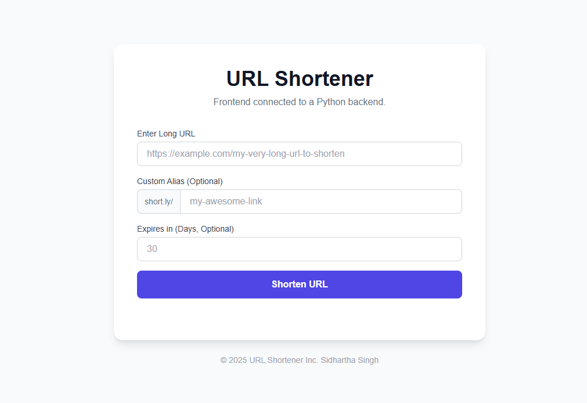

URL Shortener
A Full-Stack Django Project
Overview & Problem Solved
The URL Shortener is a lightweight full-stack web application that converts long, unwieldy URLs into concise, easy-to-share short links. It addresses the common problem of sharing lengthy URLs that are difficult to manage, especially on social media, documents, or mobile devices.
The goal of the project was to build a fully functional service similar to Bitly or TinyURL, with a clean user interface and reliable backend logic. This project also served as a hands-on opportunity to integrate frontend and backend technologies while solving real-world challenges like collision avoidance and redirection routing.
Key Features
- Short URL Generation: Automatically generates a unique 6-character short code for any valid long URL submitted by the user.
- Redirection Logic: When a user visits the short URL, they are instantly redirected to the corresponding long/original URL through a backend route.
- Minimal UI with Copy Support: The frontend is built to be responsive and user-friendly, allowing users to copy the generated short link with one click and receive confirmation feedback.
Technologies
Implementation
I developed both the frontend and backend of the URL Shortener. On the frontend, I used HTML, CSS, and JavaScript to build a clean UI with support for real-time feedback and link copying. For the backend, I implemented a Node.js + Express.js server that handles route logic, short URL generation, and redirection.
I chose a base62 encoding scheme (using alphanumeric characters) to generate compact short links. The project follows a simple RESTful design and maintains a mapping of original URLs to short codes in-memory (or could be extended to use a database). I also added error handling for invalid URLs and edge cases, ensuring robustness.
Challenges & Solutions
One key challenge was ensuring the uniqueness of each short URL while keeping the implementation lightweight and collision-free. I solved this by using a counter-based system with base62 conversion, which avoids randomness and guarantees uniqueness without a database.
Through this project, I strengthened my understanding of URL encoding/decoding, routing in Express.js, and the importance of simple but secure logic for public-facing services. I also practiced client-server integration and writing minimal yet maintainable code.
Outcomes & Impact
The URL Shortener functions reliably in both local and hosted environments and achieved its goal of providing quick, clean, and copyable short links. It demonstrates the full lifecycle of a web tool — from input processing to output rendering with functional UX.
This project highlights my ability to build complete web applications from scratch, apply efficient algorithms (base62 encoding), and design user-friendly interfaces. It also reflects my focus on clean code, usability, and performance — crucial skills for a modern web developer.